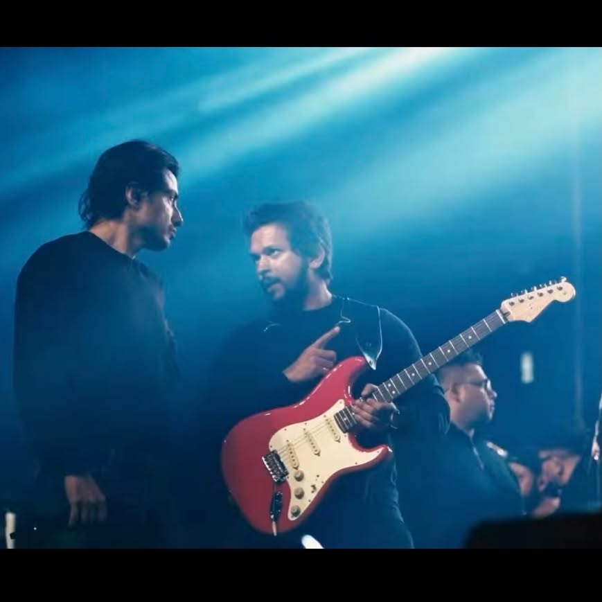
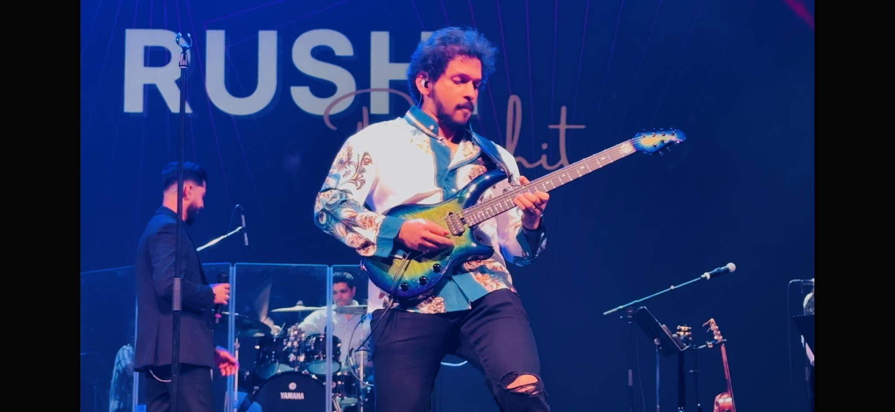
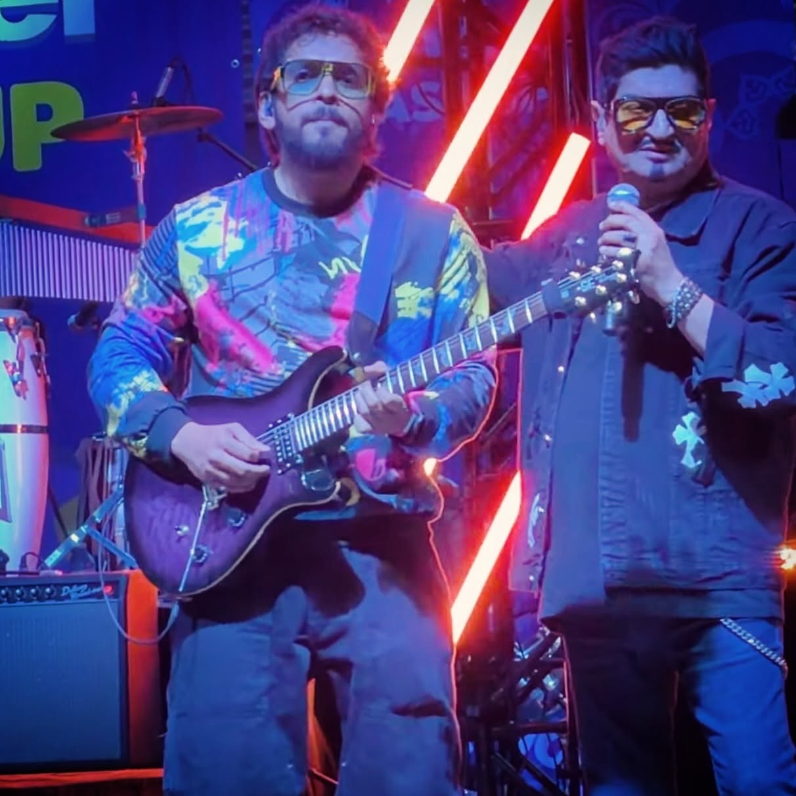
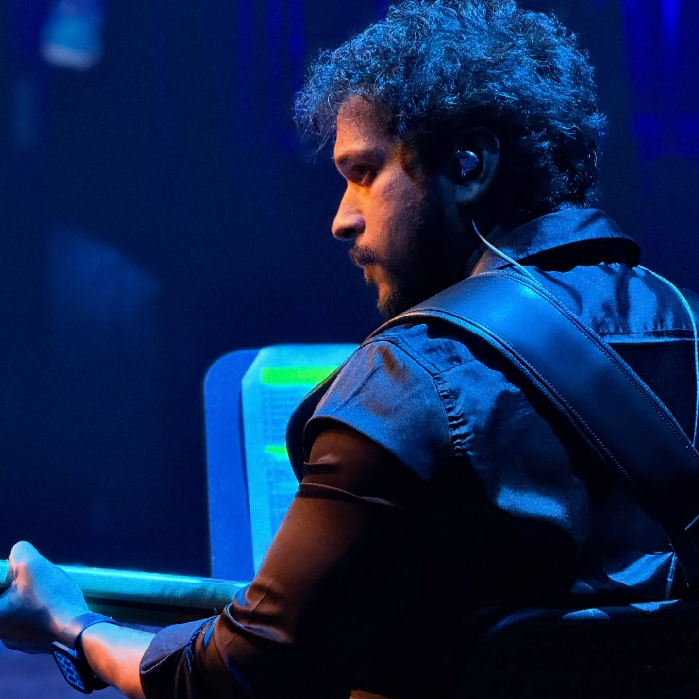
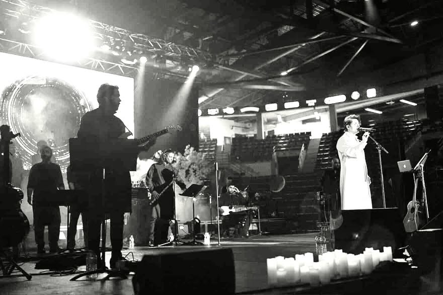
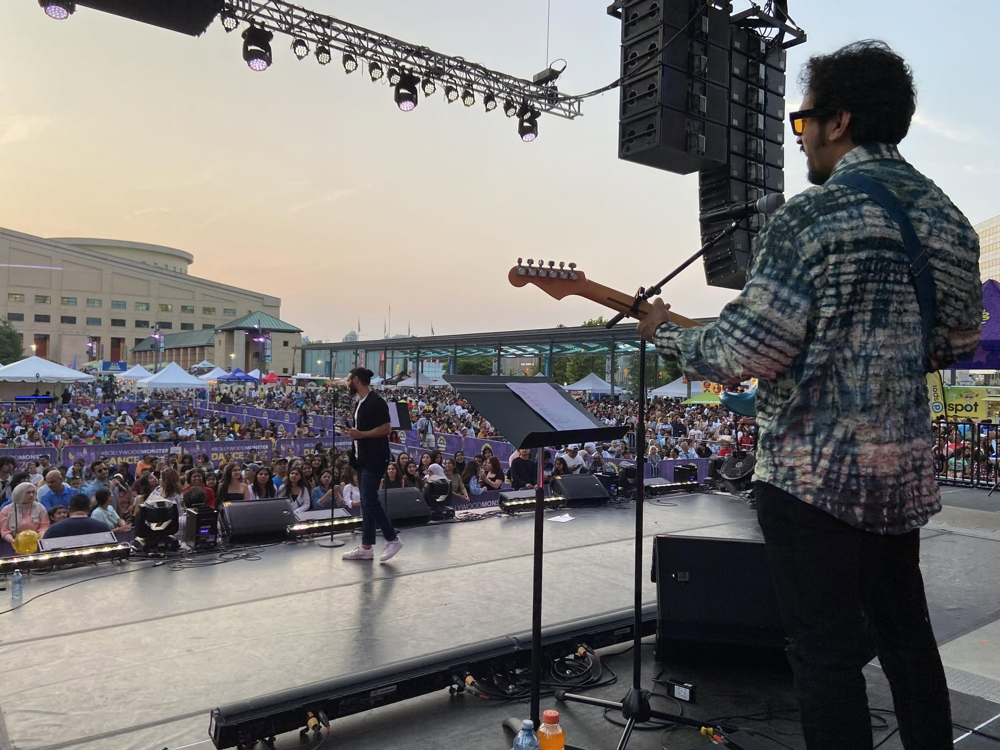
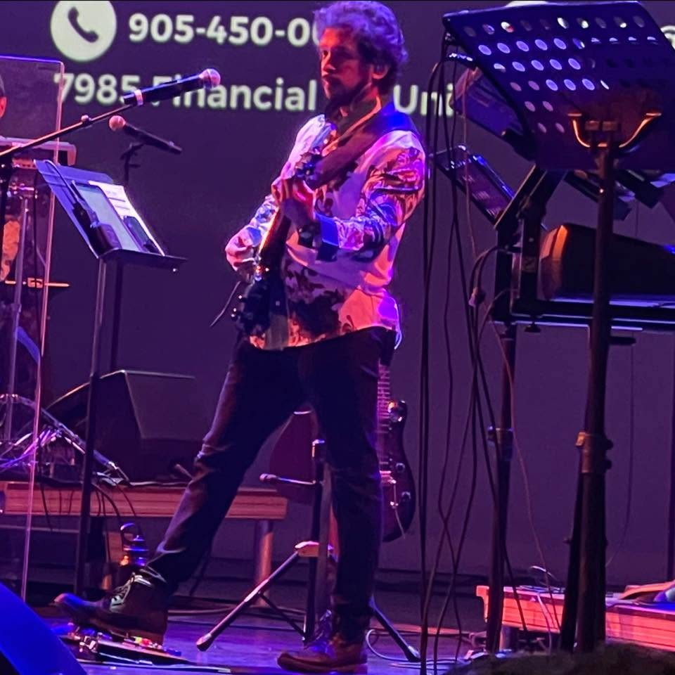

Guitar, bass guitar and mandolin for stages, studios and sessions. Blues-rooted playing with warm tube tone, patient phrasing and a rhythm-section instinct.
Glen Fernandez is a Toronto-based musician working across guitar, bass guitar and mandolin. His sound moves through blues, rock, funk and jazz-tinged soul — feel over flash, warm tube tone, patient phrasing and a rhythm section instinct built from years of live work.
From packed club stages to quiet studio sessions, Glen brings a full sonic palette: clean chime, gritty overdrive and slow-burning solos that serve the song first.
Available for live shows, session recording, depping and collaborations in the GTA and beyond.







Gigs, sessions, depping or collaborations — send the details and Glen will get back to you.